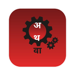

अथवा
athva · अथवा — "or else, another way"
Today, I am open-sourcing Athva · One of India's first open-source code editors 🇮🇳
Tell it the task.
Watch your editor
build it for you.
This is not autocomplete. Athva's agent reads your entire repo, opens the terminal, runs git, drives real VS Code extensions — and keeps looping until the job is done. A full native IDE with an AI that works like a teammate, not a suggestion box. Made in India. MIT-licensed. Yours forever, for ₹0.
Agent with real hands — fs · git · shell
Runs your VS Code extensions
Any model — Claude, GPT, Gemini, local
Native Rust + Tauri 2 speed
₹0 · MIT · free forever